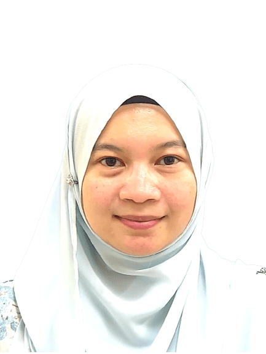

Senior Lecturer, Faculty of Chemical & Energy Engineering
Universiti Teknologi Malaysia (UTM)
"Advancing sustainable bioprocessing for a greener future."

Get to Know Me
Dr. Nur Hidayah Binti Zainan is a Senior Lecturer and Researcher at the Faculty of Chemical & Energy Engineering, Universiti Teknologi Malaysia (UTM). Her research centers on sustainable bioprocessing technologies, with deep expertise in microalgae-based biofuel production, catalytic pyrolysis of biomass, and subcritical and supercritical extraction methods.
She is actively engaged in advancing enzymatic saccharification for bioethanol production, green collagen processing, and the development of bio-based functional ingredients for cosmetics and nutraceuticals. Her work bridges fundamental science and applied green technology, contributing to a more sustainable bioeconomy.
Dr. Hidayah is dedicated to nurturing the next generation of researchers, currently supervising multiple PhD and Master's students across diverse topics in green chemistry and bioprocess engineering. She has secured national and international research grants and actively collaborates with academic and industry partners.
What I Work On
Harnessing microalgae as sustainable feedstock for biofuel production, optimizing cultivation and conversion processes.
Developing catalytic approaches for thermochemical conversion of biomass into high-quality bio-oil and value-added chemicals.
Using sub- and supercritical fluids for efficient, green extraction of bioactive compounds from natural sources.
Optimizing enzymatic hydrolysis of lignocellulosic biomass for sustainable bioethanol production pathways.
Pioneering eco-friendly methods for collagen extraction and bioactive peptide recovery with functional properties.
Developing natural, sustainable ingredients from biomass for cosmeceutical and nutraceutical applications.